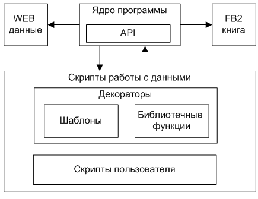

showMessage 'готовим книжку - ждите...'
rss('http://feeds.feedburner.com/ct_news?format=xml', 'http://www.computerra.ru/new/logo2.gif'){
useTimeStamp(true,false)
updateItem{
String content = loadAsString it.relatedURL
if(content){
content = content.findFirst('<div id="content">(.*)<div id="fin">', '<!-- start -->(.*)<!-- fin -->', '<div id="content">(.*)')
content = content.deleteAll('<form.+?/form>','<noscript.+?/noscript>', '<iframe.+?/>')
it.htmlContent = content
}
}
}
showMessage 'генерация книжки завершена'
Здесь функция showMessage 'готовим книжку - ждите...' - это вспомогательная функция, которая появилась в результате отработки декоратора CommunicationsDecorator.groovy .
А вот блок rss(...){...} - это результат применения шаблона RssDecorator.groovy . Аргументы (...) - это простые параметры конфигурации RSS-шаблона (адрес новостной ленты и ссылка на логотип). Внутри блока {...} находятся функции дополнительной конфигурации шаблона(в нашем случае, это useTimeStamp и updateItem ). Эти функции переопределяют стандартные реализации из шаблона RssDecorator.groovy .
Более подробно декораторы будут рассмотрены в следующих разделах.
Важным понятием является Контекст выполнения скрипта. Контекст - это, по сути, набор пар Ключ-Значение, который доступен в скрипте под кодовым словом binding . При этом значение может быть как объектом, так и функцией. Перед началом выполнения скрипта Контекст создается и инициализируется некоторыми стандартными парами. В процессе выполнения скрипта Вы можете добавлять в контекст дополнительные пары. Это может быть полезно если Вы получаете значение в одной функции, а затем хотите использовать его в другой функции.
binding.testKey = testValue
Пары, которые добавляются в контекст при инициализации, описаны в разделе Контекст